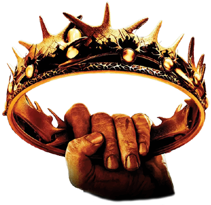

SINOPSIS
|
JUEGO DE TRONOS |
|
|---|---|
| Genero |
|
| Creado por | David Benioff D. B. Weiss |
| Basado en | A Song of Ice and Fire de George R. R. Martin |
| Tema principal | «Game of Thrones Main Theme»(compuesto por Ramin Djawadi) |
| Pais de origen | Estados Unidos |
| Idioma original | Ingles |
| Numero de temporadas | 8 |
| Numero de episodios | 73 |
